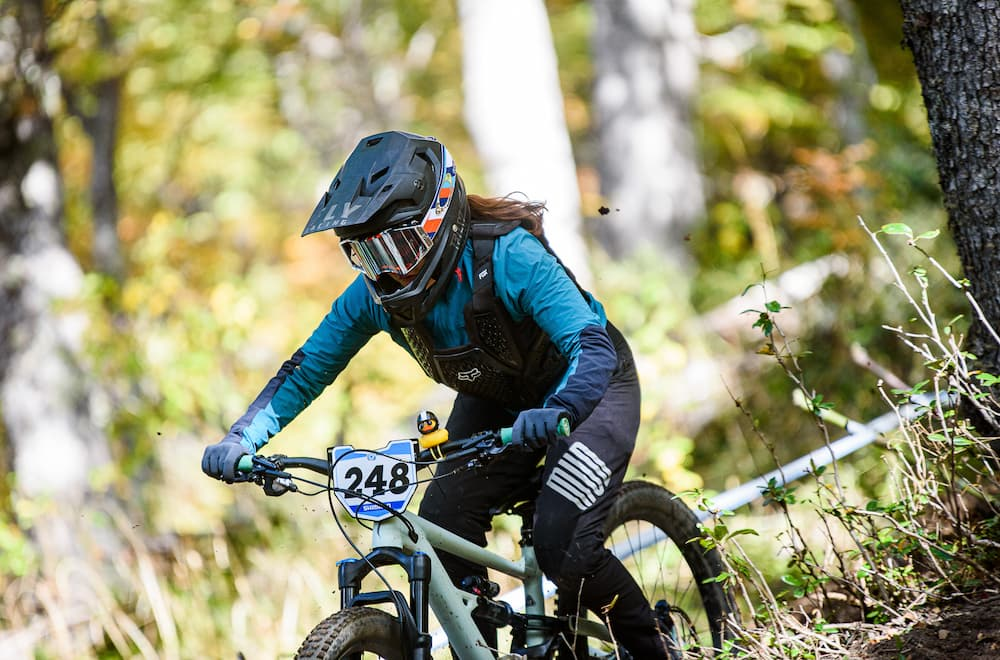

Gran Triunfo en Cerro Bayo: Gonzalo Gajdosech y Catalina Calderón Dominan la Primera Fecha del OPEN SHIMANO LATAM 2023
Publicado el 16 de abril de 2023
El campeonato de descenso más destacado de Latinoamérica, OPEN SHIMANO LATAM 2023, comenzó con fuerza en Cerro Bayo. Gonzalo Gajdosech y Catalina Calderón brillaron al quedarse con el primer puesto en las categorías Elite PRO hombres y Damas PRO, respectivamente. Este evento récord, con más de 250 corredores de todo el mundo, sirvió como preámbulo para el próximo CAMPEONATO DEL MUNDO UCI MASTERS MTB 2023.
En un día con condiciones climáticas ideales, la primera fecha del Open Shimano LATAM 2023 atrajo a 255 corredores de diferentes países, convirtiendo el evento en un espectáculo emocionante para el público en Cerro Bayo. Este evento de alto nivel y con participantes destacados marcó el camino hacia el CAMPEONATO DEL MUNDO UCI MASTERS MTB 2023, programado del 21 al 23 de abril en Cerro Bayo.
Resultados Destacados
En la categoría ELITE PRO, Gonzalo Gajdosech se llevó el primer puesto con un tiempo impresionante de 2:51, seguido de cerca por Jerónimo Páez y Pablo Seewald en segundo y tercer lugar, respectivamente.
En DAMAS PRO, Catalina Calderón dominó el circuito Kamikaze con un tiempo de 3:35, asegurándose el primer lugar en el podio. Antonia Saelzer y Lourdes De La Orden ocuparon el segundo y tercer lugar, respectivamente.
Circuito Desafiante
El circuito Kamikaze puso a prueba a los ciclistas con emocionantes descensos, curvas, contracurvas, saltos y pendientes pronunciadas, demostrando la destreza y valentía de cada competidor.
Resultados de MASTER PRO
En la categoría MASTER PRO, Rowan Sorrell se destacó con un tiempo de 3:04, llevándose el primer puesto. Pascual Canals y Matias Cox completaron el podio en segundo y tercer lugar, respectivamente.
Con el OPEN SHIMANO LATAM sirviendo como antesala, el CAMPEONATO DEL MUNDO UCI MASTERS MTB 2023 promete ser otro evento emocionante con los mejores corredores del mundo mayores de 35 años compitiendo en DHI y XCO en Villa La Angostura.
Este evento es posible gracias a la organización de RIDE S.R.L., SHIMANO LATAM, Cerro Bayo, el apoyo fundamental del Municipio de Villa La Angostura y la Provincia del Neuquén.
Consulta todos los resultados aquí.